Métier
Études d’architecture
Permis, BIM, plans, images
Andry
Chargement
Études d’architecture
Permis, BIM, plans, images
Sabotsy Namehana
Antananarivo, 101
Relevé de l’existant, conception, dossier de permis, plans de plomberie et d’électricité, images 3D.
Avant / après
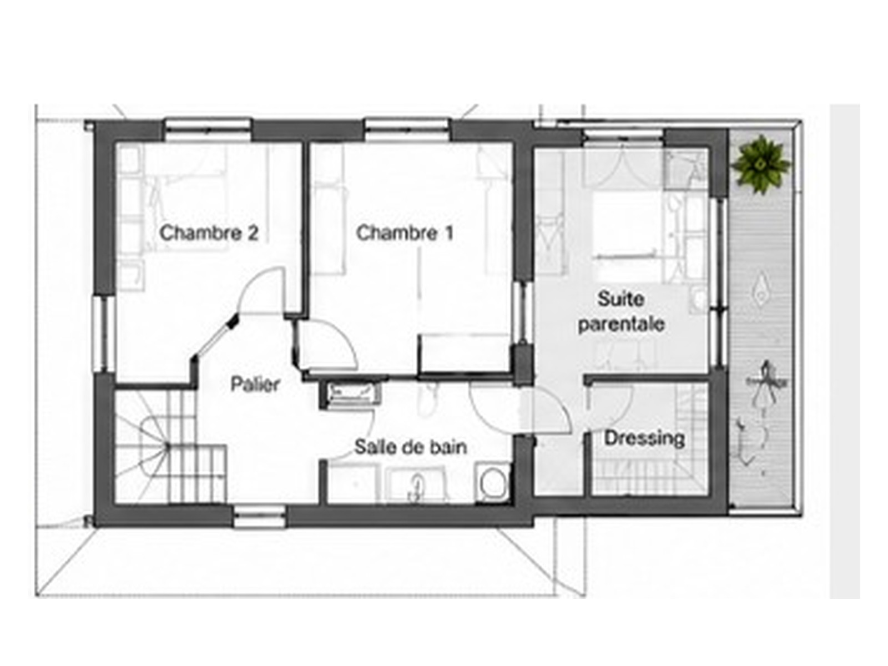
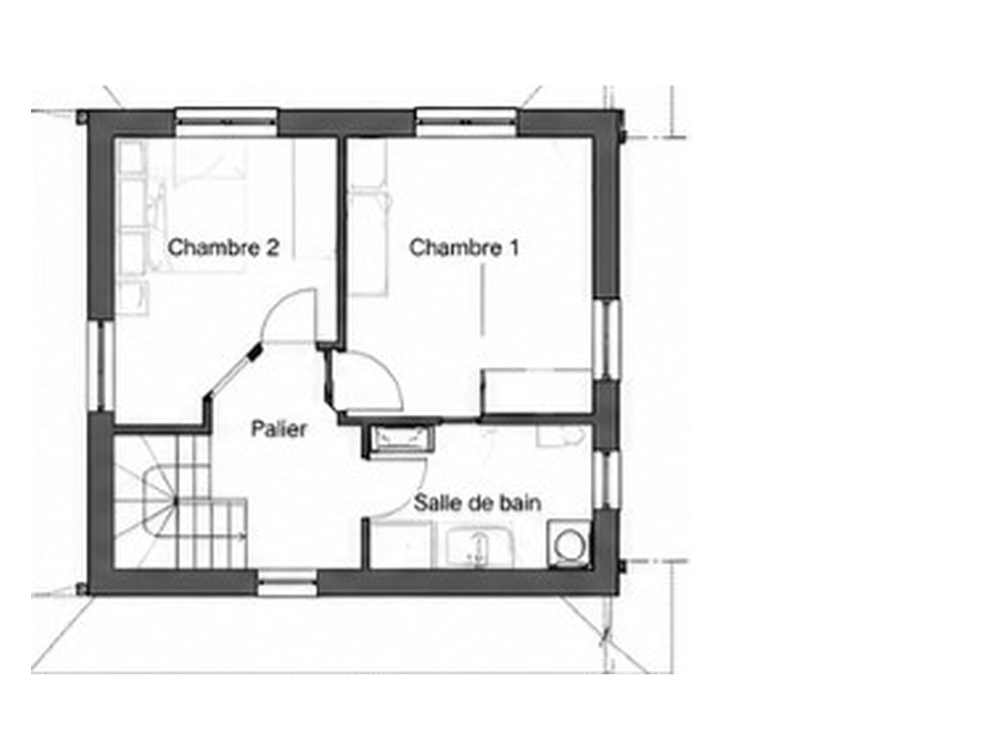
Avant Après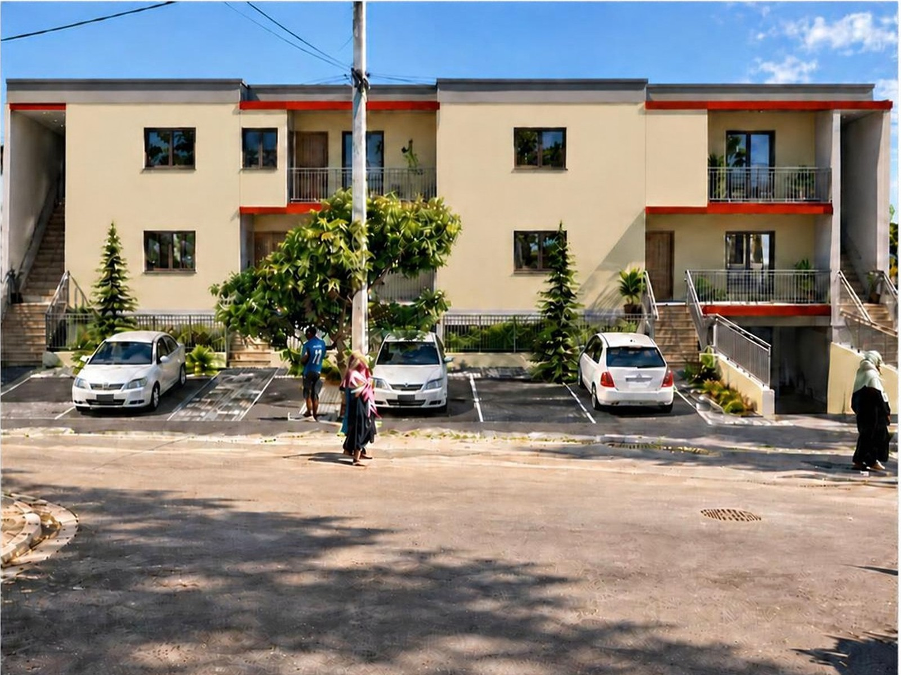
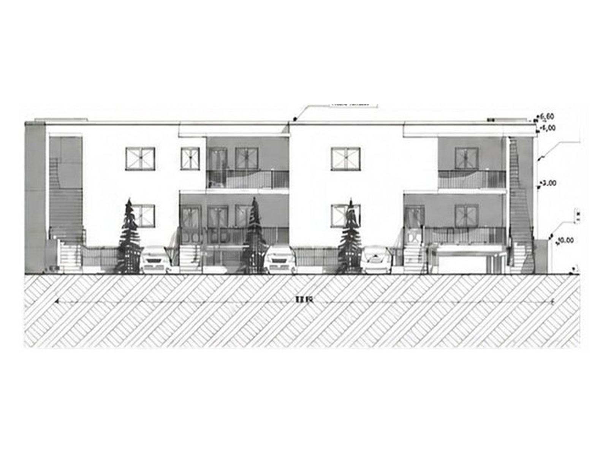
Avant AprèsInstallé à Sabotsy Namehana, Andry conduit l’étude depuis le bâtiment existant jusqu’aux pièces du chantier. Relevé en nuage de points, maquette BIM, dossier de permis, plans de plomberie et d’électricité, images 3D. Les projets montrés ici : une résidence à Mayotte, des maisons créoles à La Réunion, une extension de 185 m² à Bruxelles.
Études
Dossier de permis pour une résidence à Mayotte. Plans et élévation préparés pour constituer la demande et la relire avant le dépôt.
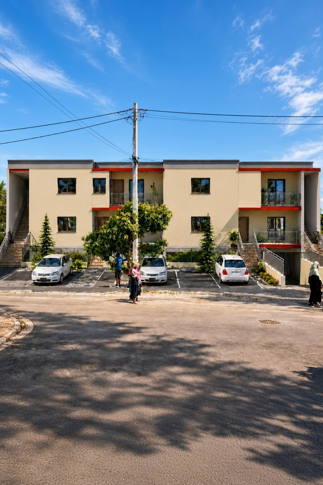
Maisons créoles contemporaines pour le climat de La Réunion. Toiture à charpente bois, varangue, volumes simples. Les pièces sont lumineuses, prévues pour l’usage de tous les jours.
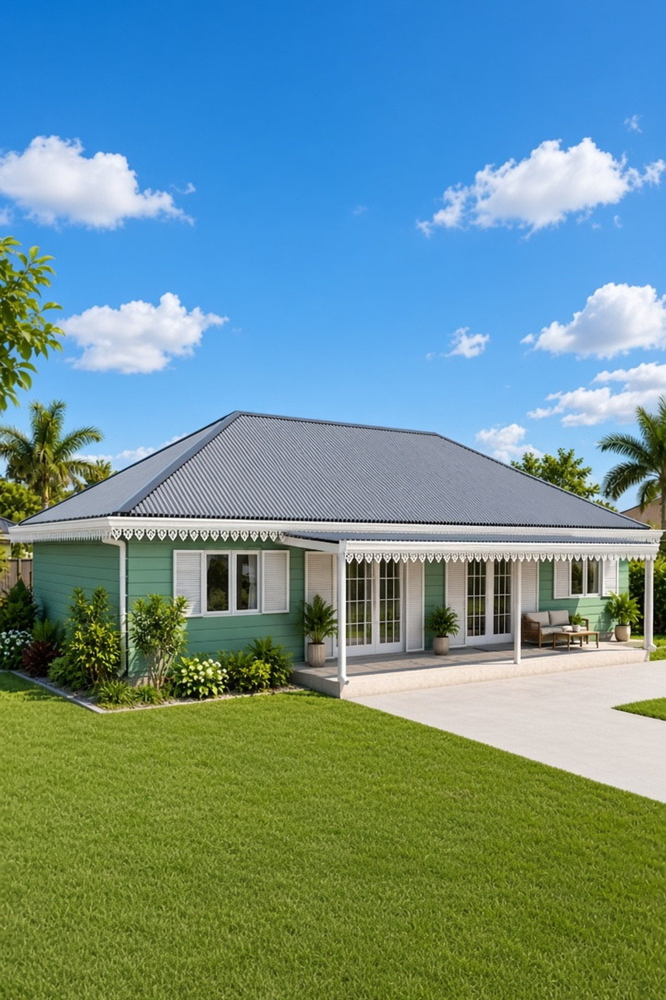
Le bâtiment existant est relevé en nuage de points, puis modélisé dans Revit. La maquette reprend la géométrie, les volumes et les détails. Elle sert à documenter l’existant avant la conception.
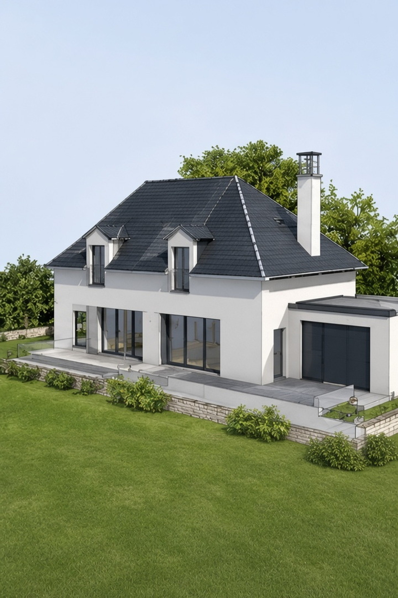
Extension de 185 m² sur un niveau, dessinée pour se tenir avec la maison déjà là. Les plans séparent l’existant, les démolitions et le neuf. À l’étage, une suite parentale et un dressing.
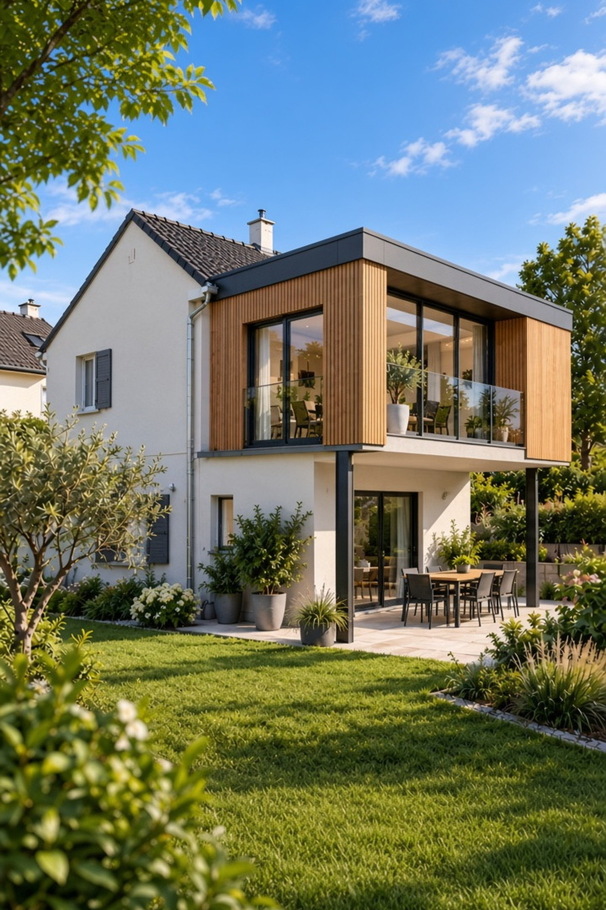
Projet local en image de synthèse. Le rendu fixe les volumes, les matériaux et la lumière, pour juger le bâtiment avant le chantier.
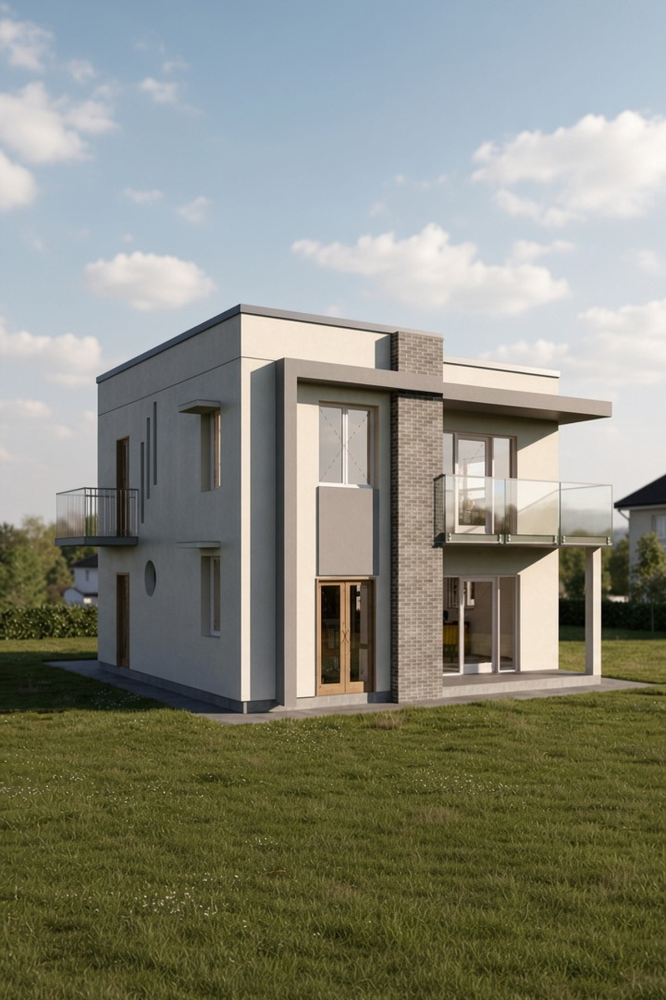
Plans de plomberie et d’électricité en phase de conception détaillée. Ils indiquent les appareils, les réseaux et les raccordements pour préparer les travaux.
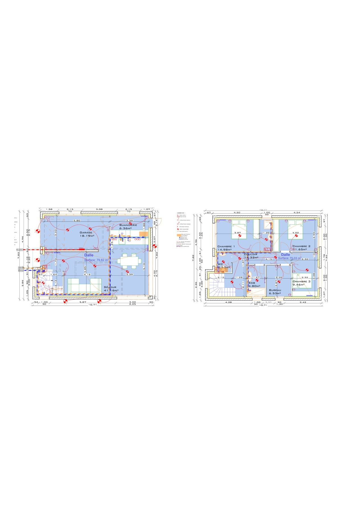
Approche
01
On part du bâtiment tel qu’il est. Le scan produit un nuage de points. La maquette BIM en reprend la géométrie, avant d’y toucher.
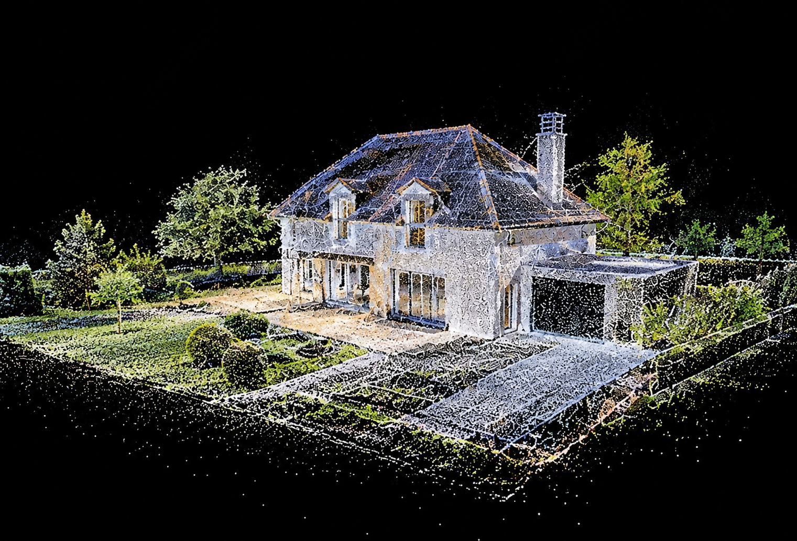
02
Maison, extension ou rénovation. Le dossier réunit le permis, les plans techniques et les images du bâtiment, avant le chantier.
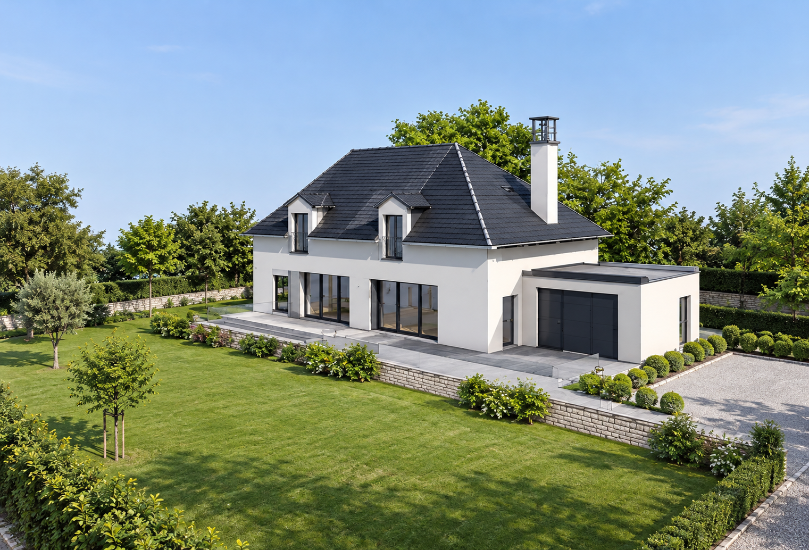